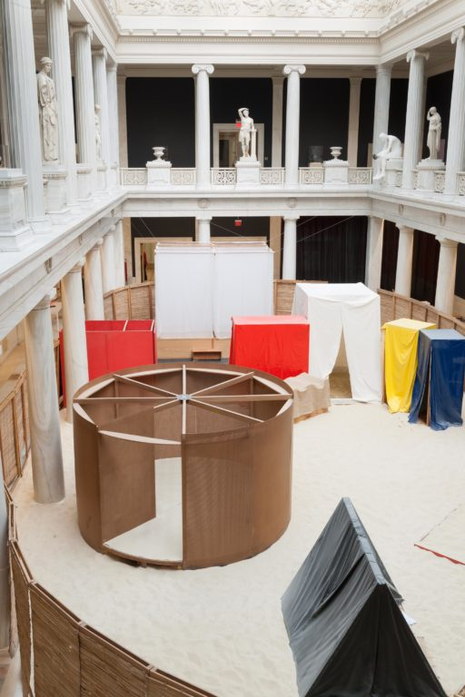

Museum
Hélio Oiticica: To Organize Delirium
Carnegie Museum of Art Heinz Galleries
Carnegie Museum of Art presents Hélio Oiticica: To Organize Delirium, the first comprehensive US retrospective of the influential Brazilian artist (1937–1980). Ranging from beautifully balanced geometric paintings to immersive, interactive environments, Oiticica’s work is visually arresting, wholly original, and seeks to build a participatory relationship with audiences. more...
Strength in Numbers: Photography in Groups
Carnegie Museum of Art Gallery One
Photographers often make groups of photographs to create narratives or examine subjects in greater detail. In many instances, a single picture is not enough to tell the complete story. Strength in Numbers: Photography in Groups draws on the collections of all four Carnegie Museums of Pittsburgh to explore the combined power of multiple photographs. Featuring nearly 100 works dating from the late 1800s to the present, Strength in Numbers highlights series of photographs organized around three themes: People, Place, and Perspective. more...